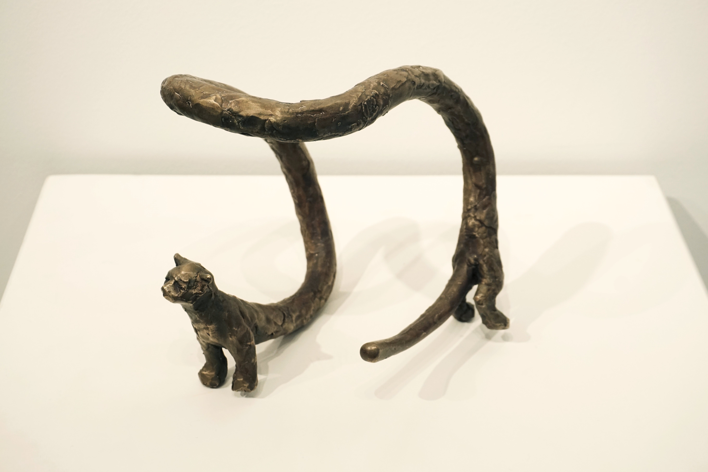
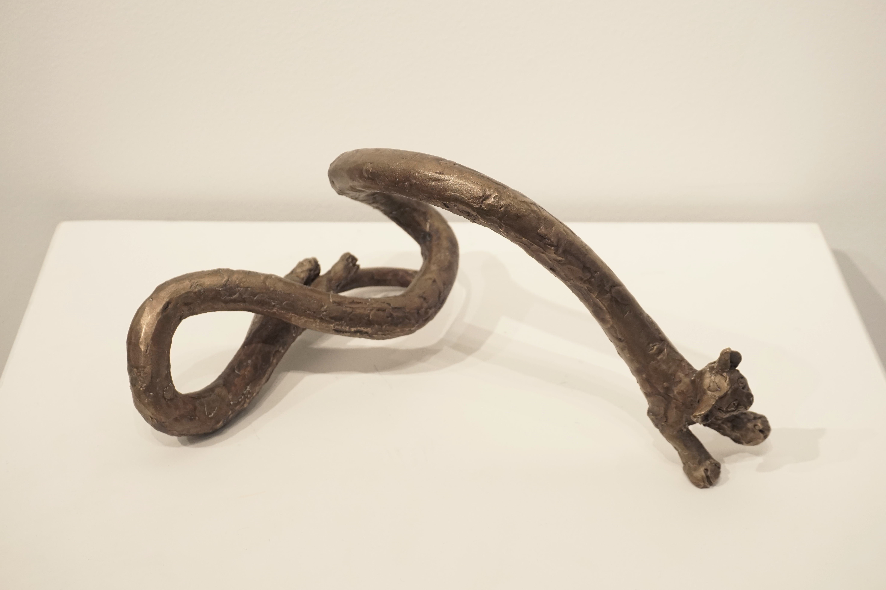
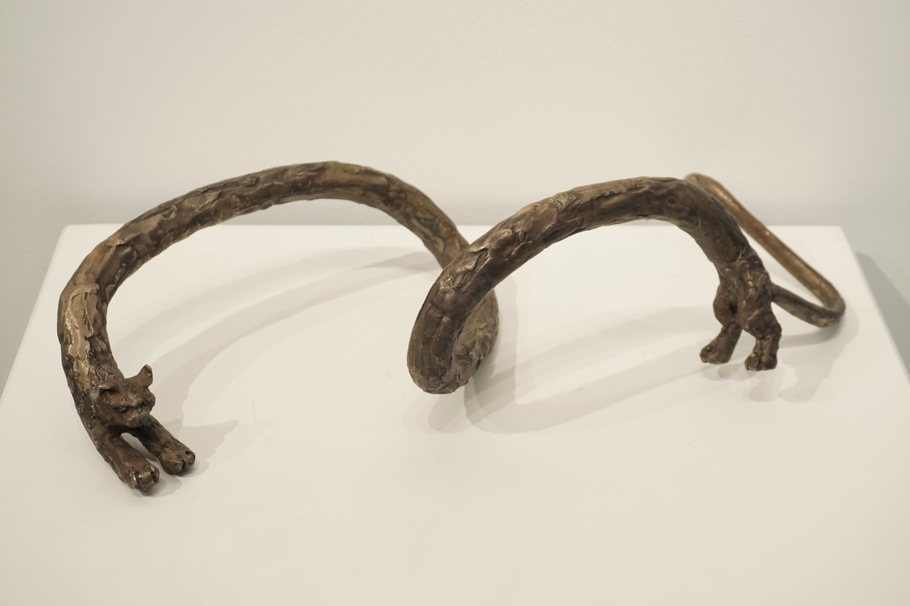
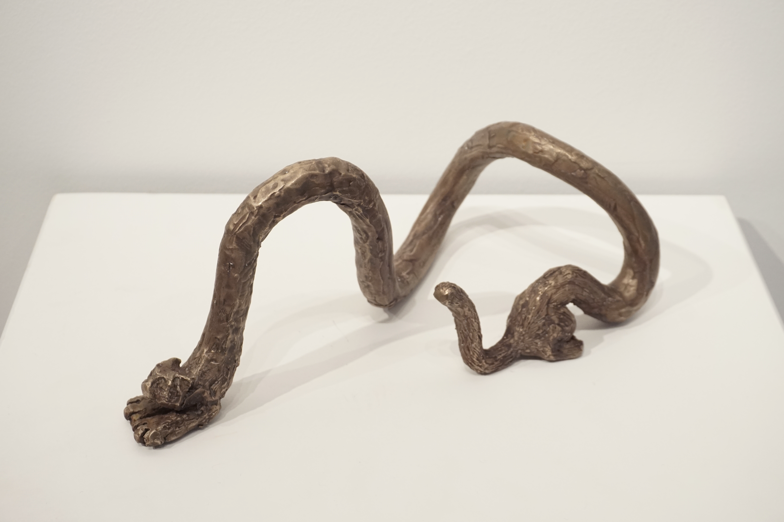
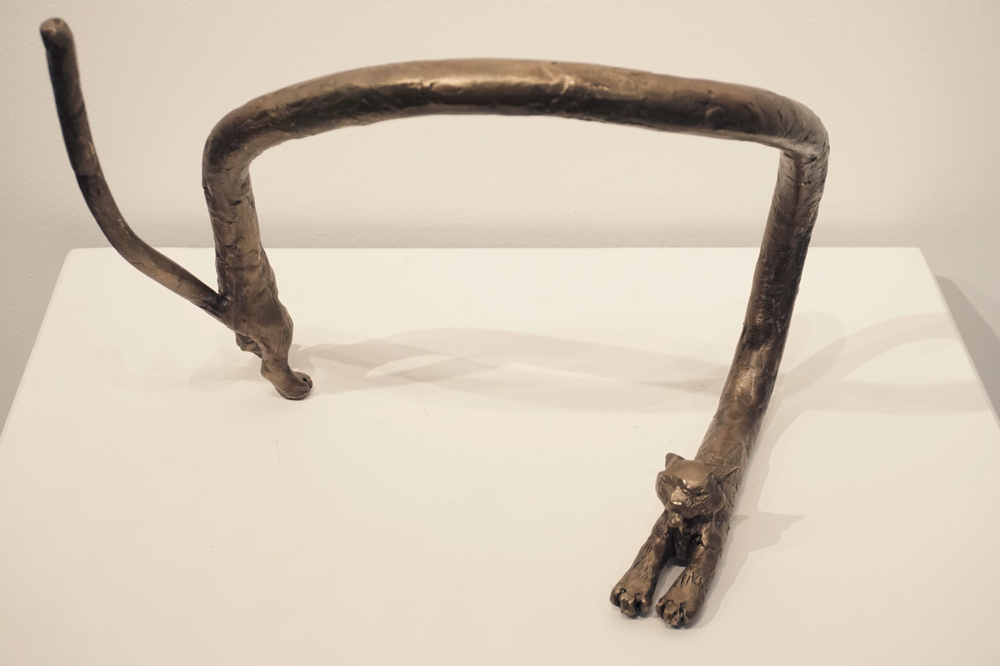
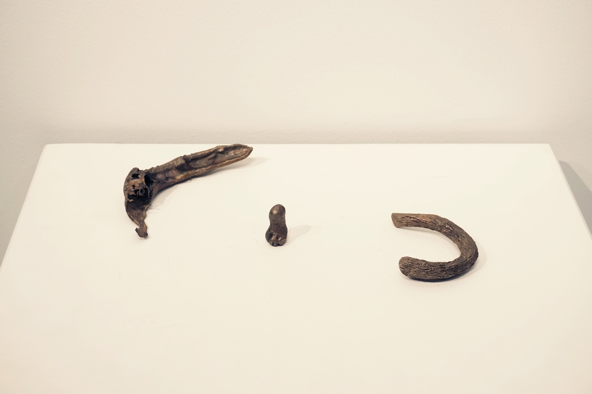
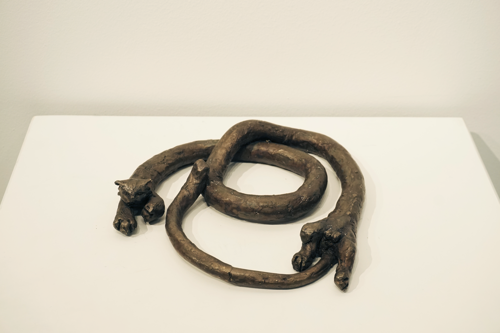
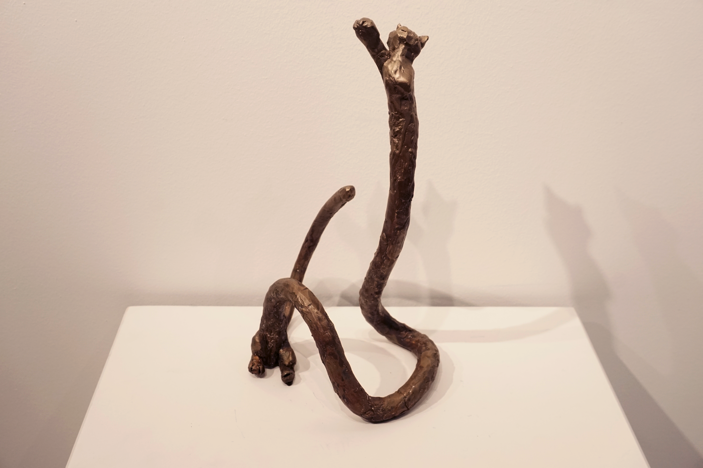

Nine Lives
Bronze
Rome Wareham
Eight elongated bronze cats surround the fragments of the ninth. They question impermanence while bringing a playful interpretation to the inevitability of death.